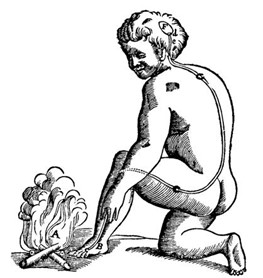

9 Mentale Modelle des Coachings
„Mental models are how we understand the world. Not only do they shape what we think and how we understand but they shape the connections and opportunities that we see. Mental models are how we simplify complexity, why we consider some things more relevant than others, and how we reason.“ (https://fs.blog/mental-models/#human_nature_and_judgment, Zugriff 2022)
Wir nutzen mentale Modell um uns die Welt zu erklären und uns Handlungen zu vereinfachen. Modelle sind natürlich immer Vereinfachungen und Abbildungen. Sie entsprechen damit nie der Wirklichkeit. Gute Modelle sind jedoch nützlich, um schnelle und konsistente Entscheidungen zu treffen. So müssen wir nicht jedes Mal das Rad neu erfinden.
In der Trainingswissenschaft kennen wir zum Beispiel das Modell dar Trainingsprinzipien – SAID, Overload, Prioritätsprinzip, Individualisierung, Interaktion der Trainingsinhalte, … (vergl. Schnabel et al. 2014). Auch das Modell der Superkompensation/Fitness-Fatigue Modell ist ein typisches Beispiel in der Trainingswissenschaft. Dieses Modell hat einige Tücken und ist sicher so nicht ganz richtig. Trotzdem bietet es seit Jahrzehnten eine Grundgerüst auf dem wir unsere Trainingspläne aufbauen. Es hat sich in der Praxis bewährt.
Im Folgenden möchte ich drei große Modelle vorstellen, die im modernen Gesundheitscoaching Zuspruch finden.
9.1 Bio-Psycho-Soziales Modell (BPS)
Das BPS Modell kommt vorrangig aus der Medizin und fand seine ersten starken Anwendungen in der Schmerztheorie. Es stellte sich schon früh heraus, dass das mechanistische Modell zu Schmerz, wie es zum Beispiel schon Descartes beschrieben hatte, nicht stimmen kann. Man ging einige Zeit davon aus, dass Schmerz ein klares Signal des Körpers an das Gehirn, aufgrund einer Verletzung oder potentiellen (!) Verletzung, ist.

Heute denken wir, dass Schmerz zwar grundsätzlich von diesem Prinzip herrührt, jedoch viel weiter geht. Wie wir Schmerz empfinden und ob wir Schmerz empfinden, ist einerseits von biologischen Faktoren, aber auch von psychischen und sozialen Faktoren abhängig. Wir können Schmerzen in manchen Situationen gut ertragen oder sogar genießen und in anderen Fällen die gleiche physische Quelle des Schmerzes als unerträglich einstufen (für eine einfache, anwendbare Übersicht zu Schmerztheorie: Butler and Moseley 2016; weiters Egger 2017; Mescouto et al. 2022).
Das BPS-Modell geht heute noch viel weiter. Auch anderer Bereiche sind direkte oder indirekt von psychosozialen Faktoren beeinflusst. Du hast dich bereits im Prozess der Anamnese und der Motivation mit psychischen und sozialen Faktoren beschäftigt. Du hast dich und deine Klient*innen gefragt, welche Personen sie in ihren Vorhaben unterstützen können, wie sie mit Stress und Schlaf umgehen oder wie sie ihre Training in den Alltag einbauen können.
Wenn wir Trainingspläne schreiben, über Motivation reden, Lifestyle Coaching betreiben und Ziele besprechen, sollten wir immer an vier Ebenen denken:
Biologie: Was wäre biologisch/physiologisch die richtige Herangehensweise?
Z.B. ist „kcal in kcal out“ der wichtigste biologische Faktor um abzunehmen.
Psychologie: Welche psychologischen Hindernisse oder Barrieren bestehen für diesen Menschen?
z.B. ist vielleicht Intermittierendes Fasten eine psychologische Hilfe um „kcal in kcal out“ zu optimieren (vergl. Aragon and Schoenfeld 2022).
Soziologie: Welche sozialen Faktoren spielen eine Rolle?
z.B. Kann mein Kunde mit „Dinner canceling“ nicht mehr am gemeinsamen Familienabendessen teilnehmen.
Umfeld: Wie beeinflussen Klima, Infrastruktur, Wohnsituation, Arbeitsweg unseren Entscheidungsprozess?
z.B. Gibt es nur fixe Mahlzeitengrößen in der Büro-Kantine; Heißer Sommertag erschwert für viele Menschen die Nahrungsaufnahme zu Mittag.
9.2 Klientenzentriertes Coaching (CCC)
CCC bedeutet, dass wir die Prozesse, die wir durchlaufen an die Kund*innen anpassen. Das Gegenteil davon ist ein Trainer*innen- oder Traditionszentrierter Ansatz. Diese beiden Modelle sind in Aussagen wie: „Das haben wir immer so gemacht!“, „Ich trainiere auch so“, „Sportler*in X trainiert auch so!“, „Das funktioniert bei allen meinen anderen Kunden!“
Das Problem an diesen Ansätzen ist offensichtlich. Es geht nicht auf die Individualität der Klient*innen ein. Jedoch schaffen es PCs so sich ihr Weltbild intern aufrecht zu halten. Denn: Wenn es nicht klappt, ist die Kundin zu „willensschwach, dumm, unmotiviert…“. Wenn es jedoch klappt, ist das wieder ein „Beweis“ für mein funktionierendes System.
Der CCC Ansatz basiert ursprünglich auf den Annahmen des Psychologen Karl Rogers (Personenzentierte Psychotherapie). Er stellte sechs Bedingungen für eine gelingenden Therapie auf, die sich auch heute noch als entscheidend herausstellen. (Einige Zeit wurde sogar in wissenschaftlichen Kreisen diskutiert, dass sie die einzigen wirkenden Kräfte in der Psychotherapie sind (Cuijpers et al. 2019).) Die vier für uns wichtigsten Grundannahmen, die Rogers auch immer weiter ausgebaut hat sind (Egger 2017):
- Bedingungslose positive Wertschätzung
Dies bedeutet, dass Therapeut*innen die Klient*innen nicht bewerten, sondern deren Erfahrungen anerkennen. Nur so ist es auch möglich die drei Pfeiler des EBC (siehe weiter unten) voll anzunehmen.
- Empathie / Einfühlungsvermögen und Gegenwärtigkeit
Die Therapeut*innen fühlen sich in die Klient*innen ein, um die Erfahrungswelt ihrer Gegenüber zu prüfen. Sie sind bei Ihnen anstatt bei ihrer persönlichen Erfahrungswelt.
- Kongruenz / Echtheit
Die Therapeut*innen sind in ihrer Rolle mit ihrem Selbstbild kongruent. Klient*innen sind dies oft nicht (laut Rogers sind sie das in der Psychotherapie (!) nie). Die Therapeut*innen versuchen diese Echtheit auch nicht zu überspielen, sondern zeigen sich ebenfalls als verletzlicher Mensch. Die Klient*innen kommen mit einem Problem (sie fühlen sich nicht fit oder nicht attraktiv…). Sie sehen auch oft zu anfangs nicht, dass die meist jungen, fitten Trainer*innen ebenfalls ähnliche Herausforderungen haben. Echtheit schafft Gemeinsamkeit und Zugehörigkeit.
Client Centered Care wurde später auch in der Pflegewissenschaft und Medizin wieder neu aufgefasst.
Im Zentrum steht der humanistische Ansatz von Rogers. Der Mensch („Patient*in“ wird als Wort hier meist abgelehnt) soll selbstwirksam (empowered) werden können und wird in alle Entscheidungsprozesse miteinbezogen (shared decision making). Die Aufgaben der Helfer*innen ist es, eine partnerschaftliche, respektvolle, transparente und auf Vertrauen aufgebaute Beziehung zu ermögliche und zuzulassen (Louw et al. 2017).
9.3 Evidence Based Coaching (EBC)
Evidence Based Medicine (EBM) wurde durch David Sackett ins Leben gerufen. Es wurde zusammengefasst als ein System das auf drei Säulen ruht:
- Die wissenschaftliche Evidenz (Forschung, Studien…)
- Die Erfahrung der Klient*innen
- Die Erfahrung der Helfenden
Sackett wird nachgesagt, dass er meinte Fachbücher gehören verbrannt, da sie veraltetes Fachwissen mit der Meinung der Autor*innen mischen. Die Autor*innen sind aber nicht bei einer Therapie (oder Training) mit den Klient*innen dabei, sondern die Therapeut*innen/Trainer*innen und die Klient*innen.
Die drei Grundpfeiler der EBC sind gleichermaßen wichtig! Es ist also nicht möglich nur auf Studien aufbauend ein Training zu gestalten, da keiner eurer Klient*innen den Teilnehmer*innen in den Studien entspricht und ihr als Trainer*innen andere Kompetenzen mitbringt als das Forscherteam (zusätzlich zu Ausrüstung und Infrastruktur). Es ist auch nicht möglich nur auf die eigenen Erfahrungen zu hören, da die meistens gebiased sind, jede*r einzelne PC mehr blinde Flecken hat als ungetrübtes Blickfeld.
„Evidence based medicine is not “cookbook” medicine. Because it requires a bottom up approach that integrates the best external evidence with individual clinical expertise and patients’ choice, it cannot result in slavish, cookbook approaches to individual patient care.” (Sackett et al. 1996, 72)
Sowohl in der Medizin als auch in Exercise Science ging der Trend in den letzten Jahren mehr und mehr wieder in Richtung EBM Modell.
Durch die größer werdende Datenmenge, die wir von jeder Person bekommen (durch Wearables und Körper-Maschinen Schnittstellen) erhoffen sich viele jedoch wieder ein objektivieren und optimieren von Gesundheitsinterventionen. Ein Push von Seiten der Biomedizin-Hardliner, der, wenn nicht ganz unnötig, sicherlich verfrüht kommt. Noch sind wir nicht so weit, dass wir Menschen nur als die Summe ihrer gemessenen Biomarker betrachten können und Training beispielsweise an die Genetik anpassen können. Leider sehen wir in der Fitnessbrache oft Scharlatane, die versuchen über Zahlen und Messdaten Rückschlüsse auf ein „optimales Trainingprogramm“ zu machen.
Dazu lässt sich nur im Stil von Tyler Durden antworten: „You are not your f*cking Testosteron level!“
9.4 Weitere Überlegungen
9.4.1 Schuld
Der Fitnessbereich arbeitet häufig mit einer Strategie, die die Kirche seit gut 2000 Jahren erfolgreich perfektioniert hat. Die Idee von Schuld (z.B. am Gewicht und Gesundheit) ist stark in unsere Kultur und in unser Denken integriert. Im Unterschied zur Religion sollten wir uns aber klar sein, dass unser Ziel nicht ist, möglichst viele „Sünder“ möglichst lange im System Kirche/Fitness-center zu halten, sondern sie von dieser Idee der Fitness vielleicht sogar ein Stück zu befreien und anstelle von Unzufriedenheit mit sich selbst, etwas anderes zu erleben, wenn sie in den Spiegel schauen.
Wer die Schuldkarte spielt schafft lediglich Abhängigkeit und Unzufriedenheit. Für die Coaches, die die Schuldkarte spielen, ist es jedoch doppelt angenehm: wenn Klient*innen versagen ist es deren Schuld, wenn sie jedoch ihr Ziel erreichen, ist es mein Verdienst.
Frag dich mal selbst ernsthaft: Ist es jemandes Schuld…
- … nicht fit zu sein?
- … Nicht intelligent zu sein?
- … zu rauchen?
- … Übergewichtig zu sein?
Frage dich ernsthaft und geh richtig in die Tiefe. Wo startet dessen Schuld? Wo ist der Punkt im Leben der Person an der sie selbst schuldig ist?
9.4.2 Sünden
Was fällt dir ein, wenn du an Sünde denkst - Sex oder Essen?
Viele eurer Kund*innen haben gelernt, dass es Sünden (gerade beim Essen) gibt. Man kann natürlich Buße tun, indem wir uns bewegen und alles ungeschehen machen. Manchmal ist Gemüse auch der Ausgleich zur Sünde. Wir werden von den Sünden losgesagt.
Die eigentliche Idee hinter der Buße war jedoch die Vergebung. Jedoch bleibt diese im modernen Sinn außen vor. Niemand verzeiht sich selbst für die Schokolade. Solange das jedoch nicht passiert und die Menschen nicht auch in Frieden und Akzeptanz mit ihrem Hang zu Schokolade sein können, dreht sich die Spirale weiter um Selbsthass und „ausbrennen der Sünde“.
Wichtig ist natürlich, dass Buße tun (= Gemüse oder Sport) niemals Spaß machen darf! Somit darf ich ja Sport auch nicht genießen. Es ist schließlich meine Buße. So absurd es scheint, ist es doch Teil unseres Gedankengutes.
Solange Klient*innen nicht erkennen welche Bedürfnisse sie sich durch die Handlung, die sie als Sünde abstempeln erfüllen und damit diese auch wohlwollend annehmen, solange können sie auch das gesunde Essen/die Bewegung nur als Buße ansehen. Uns ist natürlich auch von einer biologischen Sichtweise klar, dass schlechtes Verhalten nicht mit gutem Verhalten wirklich auszugleichen ist. Wer die Kalorien an Keksen beim Laufen ausgleichen versucht sieht ja nur einen Teil der Gleichung. Sport ist mehr als nur Kalorien und Kekse sind ebenfalls mehr als Kalorien.
9.4.3 Mental Toughness and Grit
Der typische Coach-Hardass Ansatz von Grit (= conscientiousness) besagt, dass wir einfach hart zu uns sein müssen.
„Just do it!“ (schlag mal nach woher Nike diesen Spruch hat)
„Zähne zusammenbeißen und durch!“
„Keine Müdigkeit vortäuschen!“
„Fake it till you make it!”
“Geist über Körper!“
Es geht zusammengefasst darum, die eigenen Gefühle abzustellen oder sie zumindest nicht zu zeigen. Es hat sich jedoch herausgestellt, dass dieser Ansatz mit einigen Problemen einher geht. Die Motivation steigt schnell, fällt jedoch auch wieder rapide ab. Wenn Kund*innen diese Art des Denkens länger durchhalten, dann nur auf Kosten anderer Lebensbereiche, denn sie erfordert viel Willenskraft und Anstrengung. Die Alternative ist es, Gefühle zu erkennen und zu benennen. Sie sind unserer wichtigsten Fluginstrumente, die aber auch trainiert werden müssen. Ja, Kund*innen haben Angst zu versagen, sie verspüren Scham in der Umkleide oder Ekel vor sich selbst oder vor vielbenutzten Hantelbänken. Aber auch wir als Trainer*innen haben Angst - zum Beispiel vor unserer eigenen Ohnmacht beim Umgang mit den Gefühlen der Trainierenden.
Grit und Mentale Toughness heißt nicht, keine Gefühle zeigen, sondern diese klar zu erkennen (nicht so leicht), zu benennen und als eine Einschätzung der Situation mitzunehmen. Als PCs sind wir nicht therapeutisch ausgebildet. Wir können jedoch (wie im Sport, Ernährung und Regeneration) mit gutem Beispiel voran gehen und unserer eigenen Gefühle klar ansprechen.
Verlassen wir uns auf Just-do it Mentalität holen wir außerdem nur die Kund*innen ab, die es sowieso schaffen würden ihre Ziele in der Fitness zu erreichen. Ihnen ist dieser Lebensbereich besonders wichtig und sie haben die Zeit und Ressourcen den Zielen nachzugehen. Genau aus diesem Grund scheint es auch so, dass Coach-Hardass auch mehr Erfolg hat als Coach-Mitgefühl. Ersterer hat auch Klient*innen die zu dieser Philosophie einen Zugang finden. Die anderen springen ab oder werden grundsätzlich nicht angesprochen.
Buchempfehlung dazu, relevant für den Sportsektor: http://www.stevemagness.com/do-hard-things/
9.4.4 Probleme kreieren um sie zu lösen
Eine häufige Strategie von Trainer*innen und Therapeut*innen ist es, Probleme aktiv zu suchen, um sie dann zu lösen. Das beeindruckendste Beispiel dafür sind die Memory Wars der letzten 20 – 30 Jahre. Psychotherapeut*innen und Psycholog*innen gelang es mehrmals „verborgene Erinnerungen“ an z.B. Vergewaltigungen in Personen aufzudecken. Das Problem dabei: einige der Personen hatten nie eine Vergewaltigung, konnten aber durch suggestive Techniken und Hypnotherapie dazu gebracht werden, sich leibhaft an eine solche zu erinnern (Ost et al. 2013). Dies geschah natürlich nie aus Böswilligkeit der Therapeut*innen, sondern aus der Überzeugung heraus, dass da doch ein Problem sein muss!
„Sie reagieren so defensiv auf diesen Typus von Männern – haben sie jemanden in der Familie der so ähnlich ist? Welche Kindheitserinnerungen haben sie an diesen Onkel? Und da ist wirklich nie etwas besonderes vorgefallen? Bei Ihrem Verhältnis zu Männern, muss da irgendetwas dahinter stecken…“
Nun, das Gleiche passiert in der physischen Praxis zum Beispiel mit Haltung. Es wird das Problem der „schlechten Haltung“ kreiert, das dann durch die Expert*innen wieder verbessert werden kann.
„Sie haben eine so schlechte Haltung! Haben Sie Rückenschmerzen? Nein – Na das kommt noch, wenn wir nicht gleich was machen!“
Ein anderes Beispiel ist Chiropraktik (https://youtu.be/t2yBlozgWuc). Hier wird (konträr zu jeder wissenschaftlichen Forschung ein alternatives Modell erstellt. Dinge, die die Wissenschaft nicht sieht und nur die eingeweihten Chiropraktiker*innen (mit ihrem geheimen Wissen) erfühlen können…
Wir sind alle gefährdet in diese Falle zu tappen und unseren Klient*innen mehr Probleme anzudichten, als gut ist. Wir müssen uns ja auch verkaufen und uns selbst unsere Profession, das jahrelange Studium und die hohen Preise rechtfertigen.
9.4.5 Was sie wollen und was sie brauchen
Wir müssen uns immer fragen, ob wir den Kund*innen das geben, sollen was sie brauchen (unser PC Blickpunkt) oder was sie möchten (ihr Blickpunkt).
Einerseits sind wir Dienstleister*innen und sollten uns auch so verhalten (die Kund*innen möchten etwas und wir liefern), andererseits können die Kund*innen oft nicht richtig einschätzen was sie brauchen. („Ich brauche mehr Bauchmuskelübungen um mein Bauchfett zu verlieren.“)
Es kommt hinzu, dass wir in gewisser Weise von unseren Kund*innen abhängig sind und Trainer*innen befürchten, dass Kund*innen abspringen, wenn wir nicht das machen, was sie möchten. Gleichzeitig sollten Sie auf lange Sicht ihre Ziele erreichen und dabei keine gesundheitlichen Risiken eingehen.
Denke an CCC. Es geht nicht darum, dass Klient*innen die Entscheidungen treffen was wir machen, aber auch wir treffen sie nicht alleine. Es geht um einen Austausch und Shared Decision Making. Dies gelingt nur bei klarer Kommunikation auf Augenhöhe und gut definierter Berufsethik (siehe @ref(Ethik))
9.4.6 Kundenbindung
Viele PCs denken an Kundenbindung. Sie möchten Klient*innen so lange wie möglich behalten und sind sogar stolz auf Klient*innen die schon jahrelang mit ihnen trainieren. Dies ist nicht an sich schlecht.
Ab einem bestimmten Punkt sollten wir uns fragen wie viel wir den Kund*innen noch beibringen können und inwieweit die professionelle Beziehung mit unseren Kund*innen noch beibehalten werden kann. Auch aus wirtschaftlicher Sicht ist es nicht nachhaltig, auf Kundenbindung zu setzen. Auch die PCs binden sich schließlich an die Klient*innen. Fallen langjährige Kund*innen weg, kommt es schnell zu einer existentiellen Krise. Auf der anderen Seite könnte es eine Strategie sein Klient*innen immer schnellst möglich los zu werden. Wenn wir versuchen Kund*innen möglichst alles wichtige beizubringen, so dass sie selbstwirksam trainieren können, haben wir die Chance neue Klient*innen anzunehmen. Jede zufriedene Kundin, der wir eigenständiges Training beibringen, ist eine potentielle Multiplikatorin.
9.4.7 Marketing mit Testimonials
Wie entstehen Testimonials?
Selbst die besten Trainer*innen werden es nie schaffen, dass alle ihre Kund*innen ihre Ziele erreichen. Aber auch die schlechtesten Coaches haben vielleicht mal einen Glücksfall und eine wirklich gute Responderin als Klientin oder eine Person, die gerade an einem Wendepunkt ihres Lebens ist, ihre Ernährung von einem Tag auf den anderen umstellt und bereit ist alles für ihre Gesundheit zu tun. Sie holt sich sogar einen Personal Coach… Nun, diese Person wird ein Testimonial. Die hundert anderen werden es nicht.
Coach Hard-ass hat natürlich mehr Testimonials, da er/sie auch mehr hardass Klient*innen anzieht.